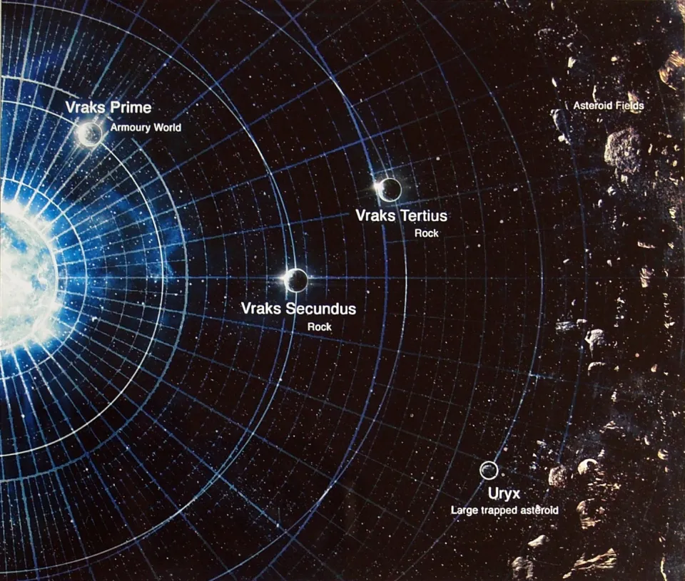
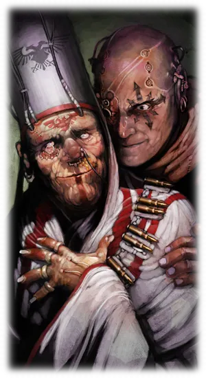
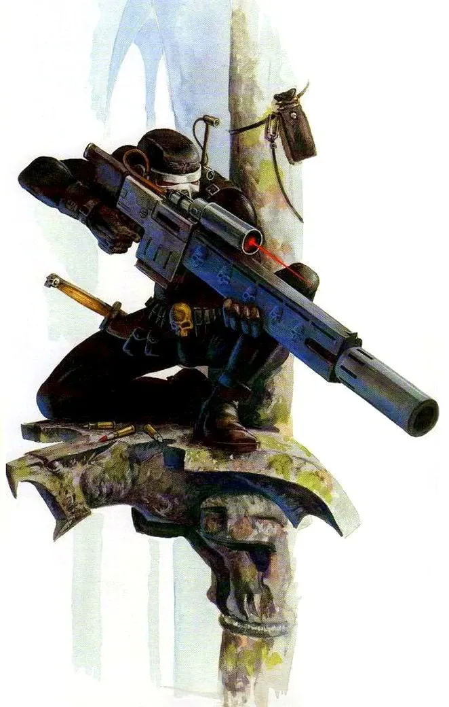
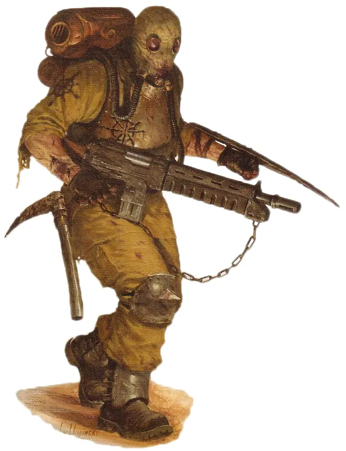
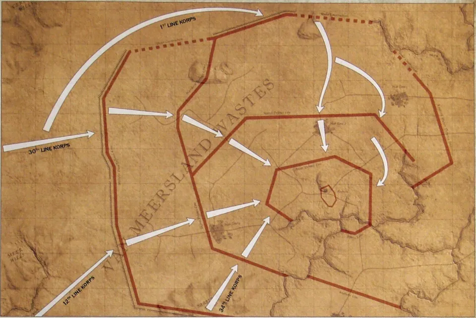
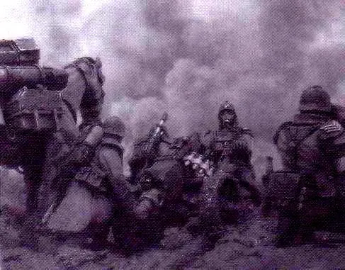
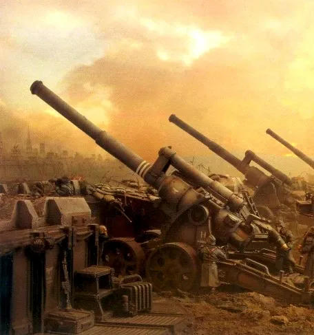
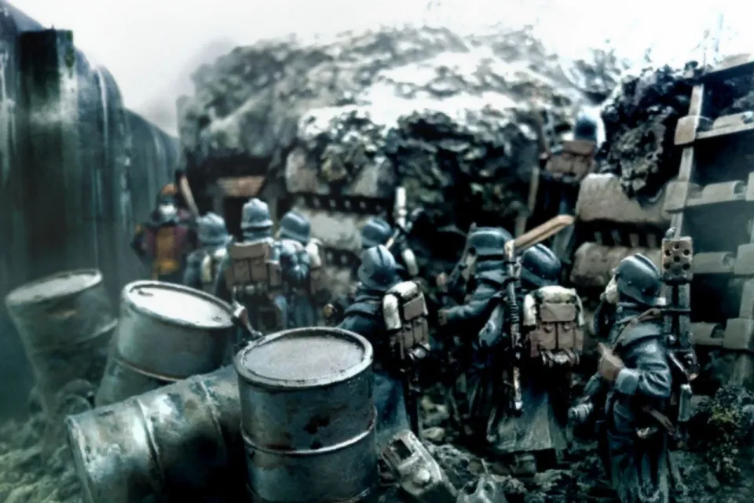
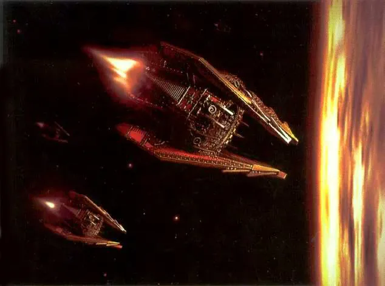
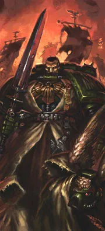

01ภาพรวม
Vraks Prime (วรากส์ ไพรม์) เป็น ดาวคลังอาวุธ (Armoury World) ที่ส่งอาวุธ กระสุน และยุทโธปกรณ์ให้กองทัพจักรวรรดิทั่ว Scarus Sector และบางส่วนของ Segmentum Obscurus มีป้อมปราการ (Citadel) ขนาดยักษ์และปืนเลเซอร์ป้องกันวงโคจร เมื่อดาวนี้แปรพักตร์ จักรวรรดิจึงต้องยึดคืนให้ได้
สงครามที่ตามมาเป็นสงครามแบบสนามเพลาะที่คล้ายสงครามโลกครั้งที่ 1 มากที่สุดในจักรวาล 40K และเป็นภาพจำของ Death Korps of Krieg กรมทหารที่พร้อมตายเพื่อชดใช้บาปของดาวบ้านเกิด เรื่องราวนี้ถูกเล่าในหนังสือ Imperial Armour: The Siege of Vraks ของ Forge World

02ต้นเหตุ: Cardinal ผู้เป็น “พระผู้ช่วยให้รอด”
ในปี 804.M41 Xaphan ได้เป็น Cardinal-Astra ผู้นำศาสนาของ Scarus Sector เขาเดินทางเทศนาไปทั่วภาค ปลุกกระแสศรัทธาจนผู้ติดตามกลายเป็นกองทัพเล็ก ๆ ข้างกายเขามี Deacon Mamon ที่ปรึกษาหนุ่มที่แอบบูชา Chaos คอยกระซิบว่าเขาคือผู้ถูกเลือกที่จะปลุกศรัทธาของทั้งจักรวรรดิ
เมื่อมาถึง Vraks คำเทศนาเรื่องการไถ่บาปและสงครามศักดิ์สิทธิ์แพร่ไปในหมู่แรงงานทาสอย่างรวดเร็ว Ordo Hereticus ส่งนักฆ่า Vindicare ไปสังหาร Xaphan แต่ล้มเหลว — และนั่นคือจุดที่ Vraks ลุกเป็นกบฏเต็มรูปแบบ


ชาวกบฏหลายล้านคนขุดแนวป้องกันหลายชั้นรอบ Citadel ไว้แล้วตั้งแต่ก่อนข่าวจะถึงจักรวรรดิ พร้อมอาวุธจากคลังทั้งดาว

03สงครามสนามเพลาะ
จักรวรรดิตั้ง 88th Siege Army จากกรมทหาร Death Korps of Krieg ภายใต้ Lord Commander Zuehlke ฝ่ายบริหารคำนวณว่าต้องใช้เวลา 12 ปี แผนคือล้อม Citadel แล้วขุดสนามเพลาะรุกคืบทีละแนว ใช้ปืนใหญ่ถล่มไม่หยุดหย่อน

เริ่มการปิดล้อม
ทหาร Krieg ยกพลขึ้นบก ขุดสนามเพลาะ และเริ่มยิงปืนใหญ่ — สงครามนี้กลายเป็น "สงครามของพลปืนใหญ่"
ศึก Fort A-453
กรมที่ 261 ฝ่าแนวป้องกันชั้นนอกได้สำเร็จ หลังการบุกแบบ "คลื่นมนุษย์" ที่สูญเสียมหาศาล
สงครามบั่นทอน
ทั้งสองฝ่ายแลกชีวิตกันทีละเมตร ทหาร Krieg อยู่ในโคลน แก๊สพิษ และความเบื่อหน่ายของสนามเพลาะ ฝ่ายกบฏโต้กลับจนกองพลที่ 1 เกือบแตก
Alpha Legion มาถึง
Chaos Lord Arkos the Faithless แห่ง Alpha Legion แอบมาเสนอตัวช่วย Xaphan ฝึกทหารกบฏให้ดีขึ้น และชักนำ Chaos Space Marine กลุ่มอื่นมาสมทบ
Dark Angels บุกท่าอวกาศ
Supreme Grand Master Azrael นำ Dark Angels ครึ่ง Chapter บุกยึดท่าอวกาศ ด้วยเหตุผลลับ — Inner Circle รู้ว่า Arkos เป็นผู้ทรยศจากยุค Heresy และอาจรู้เบาะแสของ "Fallen"
จักรวรรดิเกือบแพ้
กองเรือฝ่ายกบฏชนะศึกในวงโคจร ฝ่ายกบฏรุกกลับ Zuehlke ถูกปลดและ Marshal Kagori เข้ามาบัญชาการ พร้อมกองเรือและ Titan ของ Legio Astorum
Zhufor ยึดอำนาจ
เมื่อขวัญกำลังใจของฝ่ายกบฏตก Chaos Lord Zhufor แห่ง Skulltakers (ผู้รับใช้ Khorne) ร่วมมือกับ Alpha Legion ยึด Citadel สังหารคนของ Xaphan และทำพิธีเรียกปีศาจของ Khorne
Inquisition และ Grey Knights
Ordo Malleus ของ Lord Inquisitor Hector Rex เข้าควบคุมสงคราม Red Scorpions, Grey Knights และทหาร Krieg บุก Citadel ขณะที่ Bloodthirster ชื่อ An'ggrath ปรากฏ Rex ดวลกับมันจนแทบหมดแรง ก่อนแทงดาบ Arias ทะลุหัวใจและส่งมันกลับ Warp
ประกาศสิ้นสุดสงคราม
Grey Knights ทำลายประตู Warp ใต้ Citadel Zhufor หนีไปทางประตูนั้น ส่วน Xaphan ถูกทิ้งให้นักเวทของ Nurgle จนกลายเป็น Chaos Spawn ไร้สติ
04Death Korps of Krieg: ทหารที่อยากตาย
ชาว Krieg เชื่อว่าดาวของพวกเขาเคยทรยศจักรพรรดิ และต้องชดใช้บาปด้วยชีวิต ทหาร Krieg จึงไม่กลัวตาย สวมหน้ากากกันแก๊สตลอดเวลา และยอมเดินเข้าสนามยิงตามคำสั่งโดยไม่ลังเล — คุณสมบัติที่ทำให้พวกเขาเหมาะกับสงครามบั่นทอนที่สุด และน่าขนลุกที่สุดในสายตาคนอื่น



05Chaos ที่ถูกดึงดูดมา
สงครามที่ยืดเยื้อและการตายนับล้านดึงดูดกองกำลัง Chaos จากทั่วภาค ทั้ง Alpha Legion, World Eaters, Death Guard และกลุ่มย่อยอีกหลายกลุ่ม แต่ละกลุ่มมีเป้าหมายของตัวเองและไม่ได้ภักดีต่อ Xaphan จริง ในตอนท้าย Vraks กลายเป็นพิธีกรรมสังเวยขนาดยักษ์ให้เทพแห่ง Chaos


06ราคาของชัยชนะ
- ดาวที่ไร้ค่า — Vraks ถูกถล่มจนไม่มีอะไรเหลือ Citadel หายไป ทหารช่างของ Krieg ปรับพื้นที่ที่เหลือให้ราบ ดาวถูกประกาศเป็น "Perdita" (ดาวต้องห้าม)
- คำถามที่ไม่มีใครตอบ — สงครามนี้มักถูกยกเป็นตัวอย่างของความไร้เหตุผลของจักรวรรดิ ที่ยอมเสียทหารสิบสี่ล้านคนเพื่อยึดดาวที่ไม่เหลืออะไรให้ใช้
- Inquisition ระแวงศาสนา — เหตุการณ์ซ้ำรอยบทเรียนจาก Age of Apostasy ว่านักบวชที่มีอำนาจอาจกลายเป็นภัยร้ายแรงที่สุด
07แหล่งข้อมูลและหมายเหตุ
เนื้อหาหน้านี้สรุปและแปลเป็นภาษาไทยจากบทความใน Warhammer 40k Wiki (Fandom) ซึ่งเรียบเรียงจากหนังสือ Codex, หนังสือชุด Horus Heresy ของ Forge World และนิยาย Black Library ด้านล่างนี้ (ตรวจสอบ ต.ค. 2026)
เนื้อเรื่อง Warhammer ถูกเขียนเพิ่มและแก้ไขมาตลอดหลายสิบปี ปี จำนวน และรายละเอียดบางจุดต่างกันไปตามหนังสือแต่ละเล่ม หน้านี้ใช้ฉบับที่แหล่งอ้างอิงส่วนใหญ่ยอมรับ และบอกไว้เมื่อมีหลายฉบับ